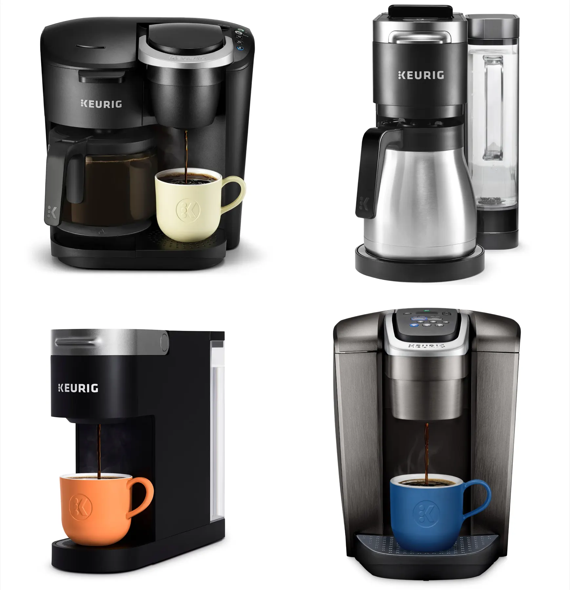
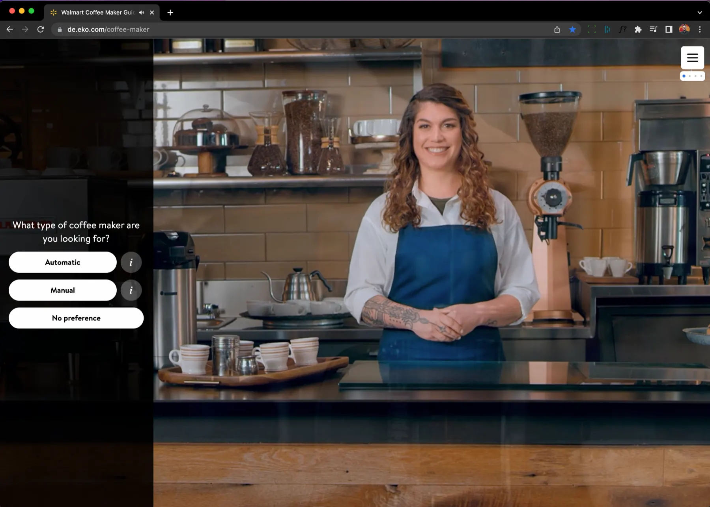
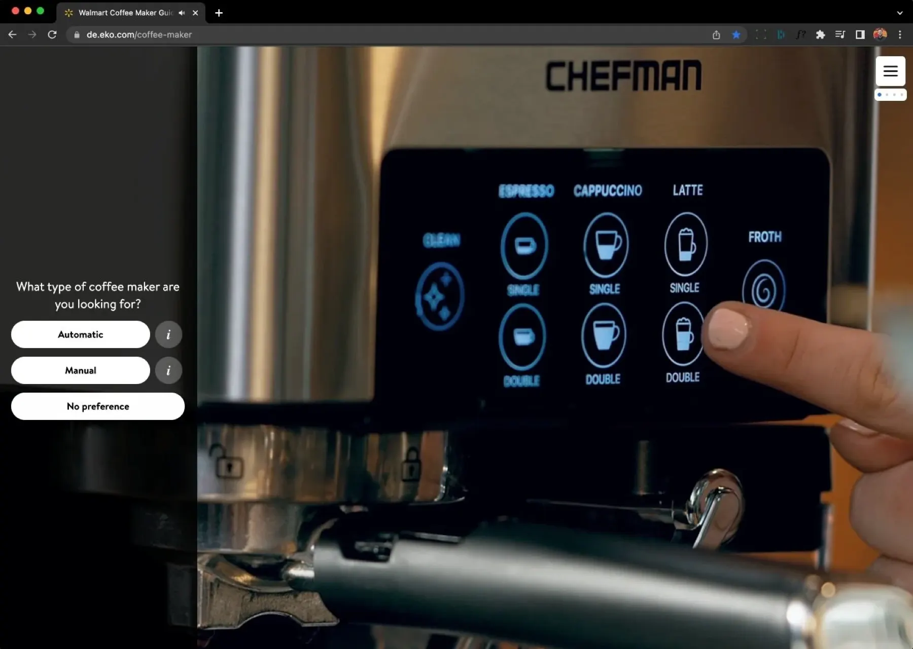
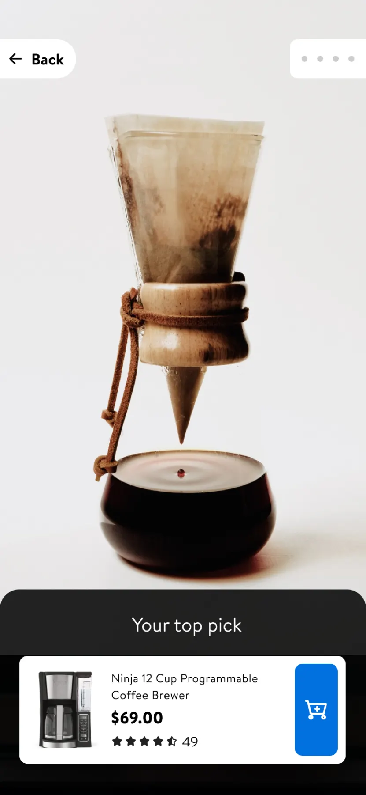
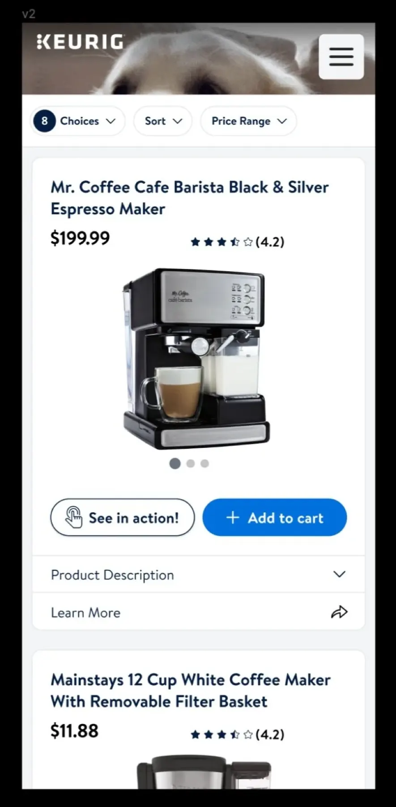
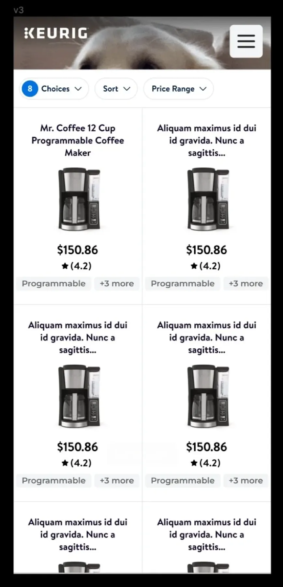
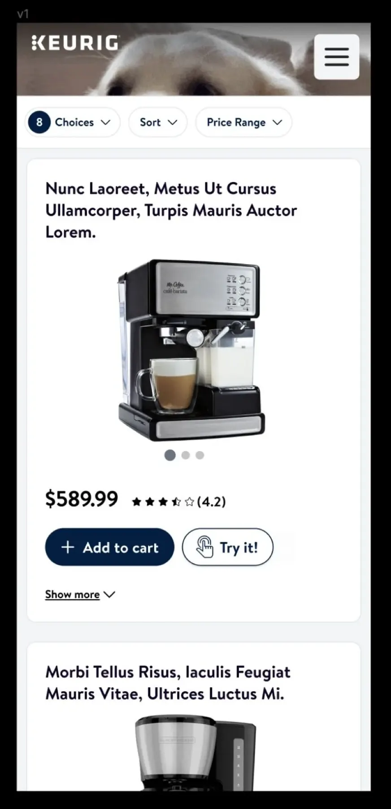

Background
Eko specializes in interactive video experiences. I was hired to work on its Walmart account, helping create a platform that guides customers to better purchase decisions.
The first vertical was coffee makers, which would set the architecture for future verticals. The first partner brand was Keurig.

Goals
Walmart had three goals:
- Help people find the best product for them
- Drive more traffic to product detail pages (PDPs)
- Reduce cart abandonment
Eko had one: drive as much traffic as possible. The main metric was conversion from our experience to Walmart’s PDP.
The customer was anyone shopping for a new coffee maker who wasn’t sure which one to pick.
A small problem with big impact
Walmart provided the initial research and numbers. Cart abandonment was above the industry average on both desktop and mobile. Small percentage differences mean millions of dollars in a US coffee maker market of roughly $7.55 billion a year.
| Cart abandonment | Desktop | Mobile |
|---|---|---|
| Industry average | 69.57% | 85.65% |
| Walmart coffee makers | 71.23% (+1.66%) | 88.1% (+2.46%) |
Walmart had a multi-tiered plan to improve these numbers, and Eko owned “filling the funnel.” My job was to increase conversion from our experience to the PDP.
| Conversion to PDP | Desktop | Mobile |
|---|---|---|
| Current | 2.1% | 0.9% |
| Goal | 3.0% | 3.0% |
User research
I ran eight in-depth interviews with a prototype. Participants were:
- 30–45-year-old home coffee drinkers
- Planning to buy a machine in the next 3 months
- Walmart shoppers who had shopped online in the past month
- The key decision maker and purchaser for their home
What worked: it helps at the beginning
- Narrows down options
- Saves time
- Lets people start the process from home
“It’s a good starting point. It can guide you through... [when] you don’t know what you’re looking for.”
— Matthew, 32

What worked: it feels guided
- Feels more guided than other online tools
- Provides helpful tips and advice
- The host seems credible
“I thought it was easy and informative without being overbearing. She’s not forcing me to make a decision but helping me to make an informed decision.”
— Latoya, 43

What didn’t
- 5 of 8 participants thought it felt too much like an ad
- People wanted more choices
“I was confused that I only saw one suggestion at the end, I was expecting to see a range of choices.”
— Ian, 44

Iterations
Finding the right number of recommendations was critical. I ran a series of smaller tests on three versions to settle how many products to show.



Animation mattered too: it gave the experience a premium feel and smoothly transitioned people into shopping.
Impact
After a few more versions, desktop beat our goal. Mobile fell just short, and became the next focus.
Lessons
- Quick, low-cost experiments are valuable, but know when it’s time to talk to users.
- Test with candidates who meet all of the criteria of your real users.